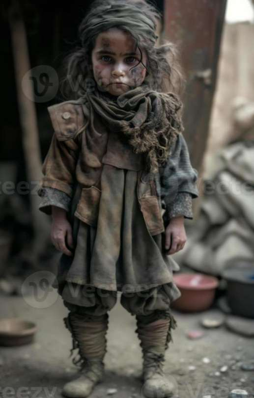

In the tumultuous aftermath of war, the life of young Ali, orphaned by the conflict, unfolded as a poignant tale of suffering and resilience. His parents, once the pillars of his world, succumbed to the brutalities of war, leaving Ali to navigate the harsh realities of loss and physical wounds.
The echoes of gunfire and explosions replaced the laughter that once filled Ali's home. The vibrant hues of his childhood were muted by the somber tones of grief, as the wounds inflicted by war etched silent scars on his tender soul.
The physical injuries Ali sustained during the conflict served as a visible reminder of the relentless nature of war. Each scar told a story of survival against the odds, but they also bore witness to the pain and trauma that accompanied such survival.
In the absence of parental guidance, Ali's journey through the aftermath of war became an arduous one. The makeshift shelters and meager resources offered little solace, and the once-familiar streets were now battlegrounds haunted by memories of the past.
Education, a beacon of hope, became a distant aspiration for Ali as he grappled with both the emotional and physical toll of war. The void left by his parents' absence was profound, and the struggle to heal, both physically and emotionally, became a testament to the resilience of a child thrust into the unforgiving crucible of conflict.
Ali's story stands as a stark reminder of the countless children worldwide who endure the dual burden of losing parents and bearing the physical scars of war. It calls upon the global community to recognize the urgent need for support, rehabilitation, and a commitment to creating a world where the silent scars of war can be replaced by the healing touch of compassion and peace.